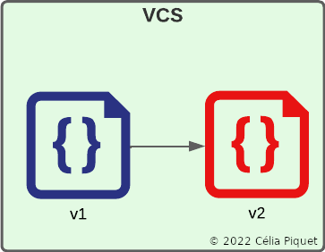

Comme vu dans la vidéo précédente, lorsque l'on développe une application et que l'on écrit du
code, on peut faire face à différents risques qui peuvent mettre en péril le bon déroulement
de ce développement : travail en équipe, perte des fichiers mais aussi apparition de bug suite
à des modifications internes ou externes. Il est donc important d'utiliser un logiciel qui
sauvegarde notre code, le partage avec les personnes qui travaillent avec nous et nous permet de
suivre l'évolution de notre code. On utilise donc presque systématiquement des
logiciels de gestion de versions ou VCS pour
Version Control System.
Vous pourrez aussi croiser d'autres noms pour parler des VCS : gestionnaires de versions, systèmes de gestion de versions, logiciels de contrôle de versions, etc.
Un logiciel de gestion de versions est un programme qui permet aux développeurs de conserver un historique des modifications et des versions de tous leurs fichiers.
Il permet de garder en mémoire :
Tous les VCS permettent de :
Par exemple, si dans mon VCS je crée un fichier pour la première version (v1) de mon application, je peux y apporter des modifications afin d'arriver à une deuxième version (v2). Le logiciel gardera alors en mémoire les deux versions.
Si ensuite j'apporte de nouveau des modifications, j'aurai alors une troisième version de mon fichier (v3). Le VCS gardera en mémoire les trois versions.
Ainsi, si quelques jours plus tard une mise à jour survient sur une technologie que j'utilisais dans ma v3 et que celle-ci devient alors non-fonctionnelle, je peux facilement à l'aide de mon logiciel de gestion de versions, revenir à la version que je veux et retrouver les fichiers fonctionnels : v2 ou même v1.
Définition :
Un VCS centralisé stocke tous les fichiers sur un unique serveur.
Définition :
Un VCS décentralisé (ou distribué) stocke tous les fichiers sur un serveur en ligne,
grâce à des services en ligne, mais aussi en local sur les machines des utilisateurs qui utilisent ce VCS.
Avantage :
Avantages :
Limites :
Limites :
Exemples de VCS centralisés:
Exemples de VCS décentralisés :
Aujourd'hui les VCS les plus utilisés sont décentralisés. Le plus répandu étant Git.